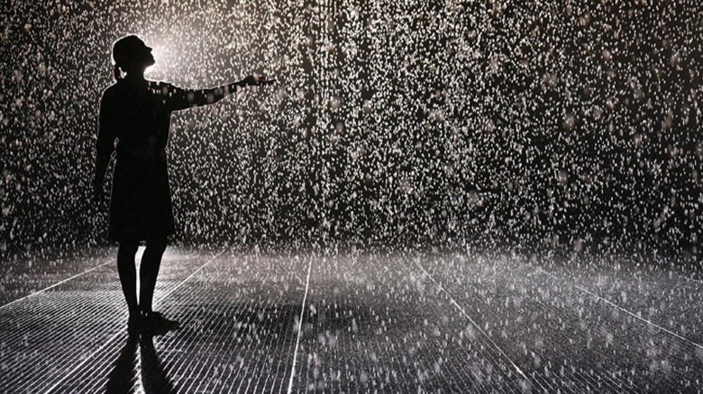

digital

Random International
http://random-international.com/work/rainroom/-どんな人
Hannes Koch と Florian Ortkrassの二人で構成されたインタラクティブアートの制作会社です。
-解説
室内に雨を降らしています。人が近づくと天井のセンサーが反応し、人がいる場所だけ雨がやみます。傘を持たなくとも雨の中をゆうゆうと歩ける不思議なインタラクティブアート作品です。
-好きなところ
雨の中にいながら雨に降られない体験ができるのは面白そうだなと思いました。